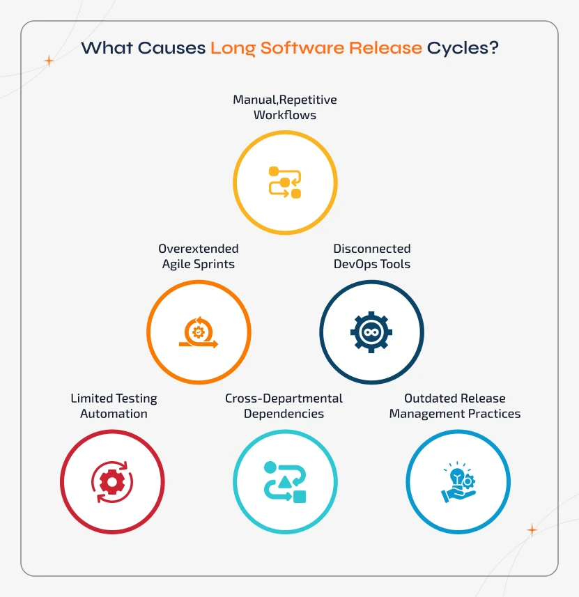
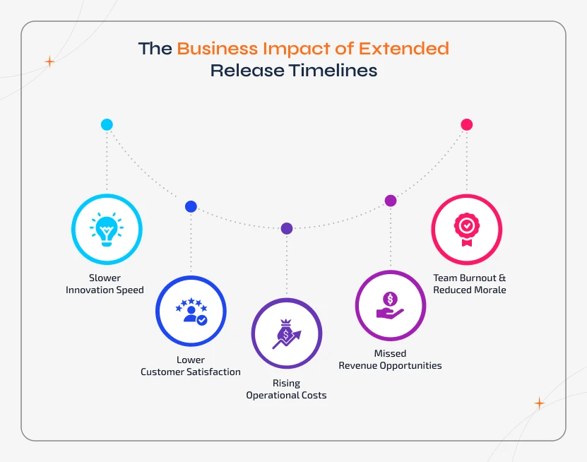
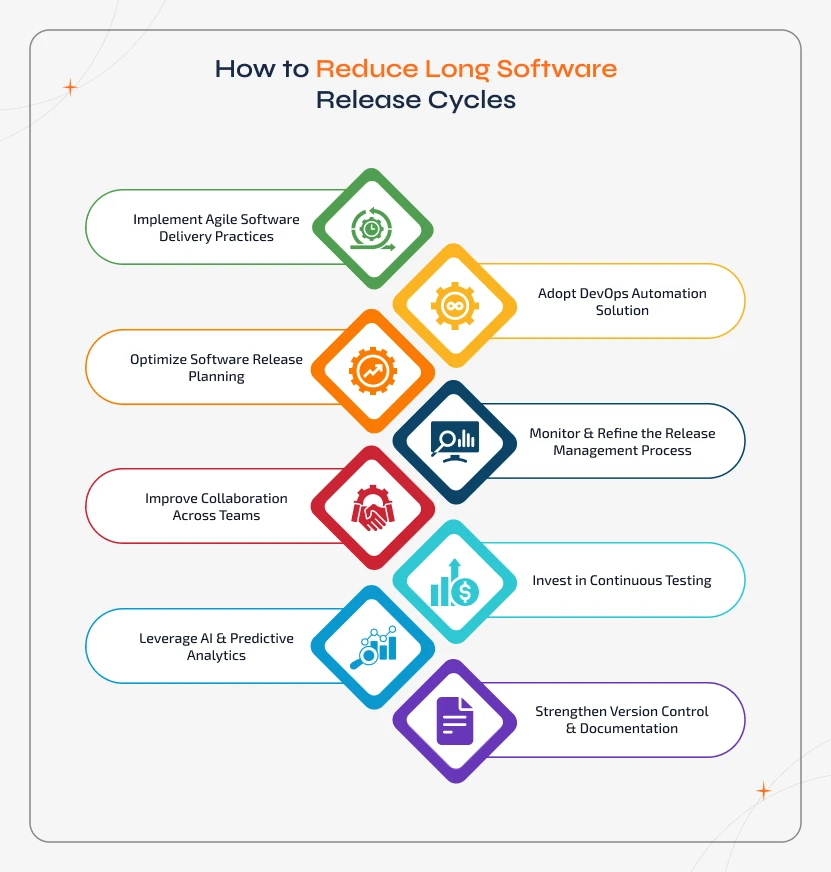
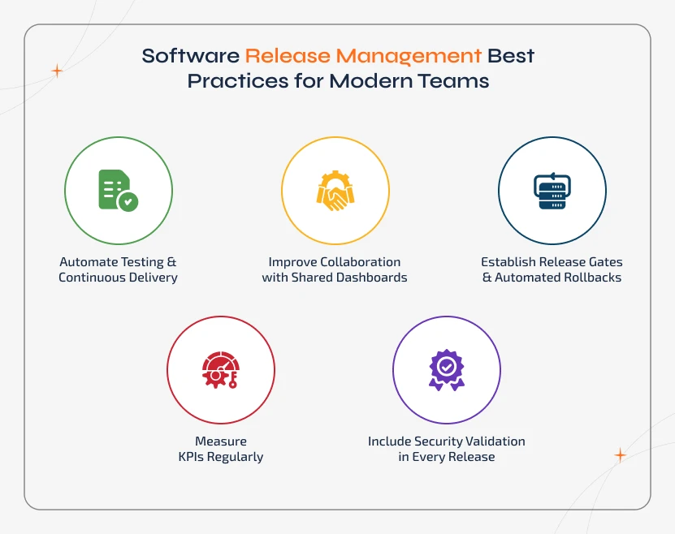

We are in a digital-first world where every second matters and speed defines success. Yet, there are lots of teams that still find themselves stuck in a long software release cycle that drags their productivity for weeks or sometimes for months. This results in missed deadlines, delayed launches, increased operational costs, and frustrated teams that wonder why innovation feels out of reach.
A slow-release pipeline can even drain your momentum quietly. So, what has started as a small delay will eventually turn into extended software delivery timelines, more tech debt, and slower feature releases.
Let us explore why this occurs, how it impacts business outcomes, and how to fix it with AI, automation, and smarter engineering practices.
What is a Long Software Release Cycle?
A long software release cycle is all about the extended duration between the initial development and final deployment stage. In agile environments, release cycles will typically last between 2-6 weeks. However, in many enterprises, especially those using outdated or hybrid frameworks, these cycles will take a few months to sometimes years.
This results in a slow software release process, and thus every update, patch, and new feature will take too long to reach the end users. Over time, these lengthy product release cycles will extend software delivery timelines and make organizations less responsive to changing market conditions, customer demands, and competitive moves. This, in turn, ultimately shifts the innovation and growth.
A standard software release cycle follows key stages such as planning, development, testing, deployment, and maintenance. It is to note that every stage is important and ensures product quality and stability. However, in many cases, delays come into play, and it may be anything from slow code reviews to dependency issues or extended QA phases. Even a small issue can affect the entire process and lead to inefficient software development cycles and missed release cycles.
When the beta testing is complete, the software moves into final regression testing and production deployment. This phase ensures every feature works seamlessly before the launch. But when the automation tools are underused or teams work in silos, then these final steps often take longer than expected. This, in turn, stretches the software deployment process and delays the delivery to end users.
Understanding the Software Delivery Pipeline & Where Delays Occur
A software delivery pipeline is nothing but the path your product takes from concept to customer. i.e., it is a path that moves through stages like planning, development, testing, deployment, and maintenance. Each phase plays a crucial role in ensuring smooth and reliable releases. But even the small inefficiencies in this flow result in software lifecycle delays.
Here is how it typically works and where problems often occur:
- Planning - Poor prioritization or unclear requirements will result in scope creep and misaligned goals.
- Development - Manual code reviews and fragmented tools will slow build progress.
- Testing - Manual QA and limited test coverage will extend validation cycles.
- Deployment - A long software deployment process often results from manual approvals and a lack of CI/CD automation.
- Maintenance - Reactive fixes instead of proactive monitoring lead to recurring issues.
Improving the software delivery pipeline isn't about speeding up one stage. It is about streamlining the entire flow for better visibility, faster iteration, and consistent delivery. With the right software delivery pipeline improvement strategy, organizations can avoid delays, reduce risk, and speed up innovation.
What Causes Long Software Release Cycles?
Many organizations are still struggling with a long software release cycle, even after adopting modern DevOps services and agile frameworks. Everyday issues like daily workflows, outdated tools, or slow approvals go unnoticed. But when they build up over time, they become the cause for major delays and hence stretch the release timelines and cut into overall team productivity.

1. Manual, Repetitive Workflows
Teams will still depend on
spreadsheets, manual code merges, and ad-hoc reviews instead of automated pipelines
and thus slowing down every stage of development.
2. Overextended Agile Sprints
Whenever the priorities
aren't clearly defined, there is a high possibility for the sprint goals to keep
expanding. This becomes the cause for further delay in the release and thus makes it
harder to track accountability.
3. Disconnected DevOps Tools
Using multiple platforms for
CI/CD, monitoring, and deployment often creates integration gaps, and this becomes
the reason for delays in releases.
4. Limited Testing Automation
Relying on manual QA and
regression testing will increase the error rates and lengthen the software
deployment process further.
5. Cross-Departmental Dependencies
When development, QA,
and operations work in silos, this automatically makes sign-offs and approvals take
longer than they should.
6. Outdated Release Management Practices
Relying heavily
on human oversight instead of automated governance will eventually slow the
scalability and increase the chance of bottlenecks.
In simpler terms, inefficiencies across planning, execution, and deployment build up over time. This creates an inefficient software development cycle that hinders innovation and delays time-to-market.
The Business Impact of Extended Release Timelines
A long software release cycle not only slows down your developers, but it also slows your entire business. Every delay impacts your product plans, customer experience, and overall business performance. Check out the impacts of a long software release cycle on business from below:

1. Slower Innovation Speed
When the teams end up spending
too long on fixing bugs or managing manual workflows, then there is less room for
creativity. Competitors using automated and agile pipelines are capable of shipping
new features faster, experimenting more often, and winning user attention sooner.
2. Lower Customer Satisfaction
Longer release cycles mean
users have to wait too long for improvements, updates, and bug fixes. This delay
will obviously frustrate the customers, reduce product engagement, and ultimately
push them towards faster-moving competitors.
3. Rising Operational Costs
Manual testing, repeated
rework, and inefficient collaboration will extend the delivery timelines and inflate
the project costs. So, the longer it takes to release, the more resources are
utilized without delivering new value.
4. Missed Revenue Opportunities
Late product launch will
cause the businesses to miss out on key market trends, seasonal demand spikes, and
customer acquisition windows. Thus, all of them impact the revenue growth.
5. Team Burnout & Reduced Morale
Constant problem-solving,
slow feedback, and a lack of recognition can overwhelm the teams. This, in turn,
causes frustration, burnout, and higher turnover, making it harder to maintain
steady delivery.
Every other delay adds hidden costs, from losing the progress to missed business opportunities. A slow software deployment process not just delays the releases, but it also slows innovation, stretches revenue cycles, and makes it harder to adapt in a market that rewards speed and responsiveness.
Are you ready to eliminate software delivery delays?
Streamline releases with agile workflows, automation, and continuous delivery best practices.
How to Reduce Long Software Release Cycles
Shortening a long software release cycle is not only about working faster, instead, it is all about working smarter as well. The focus is on removing the bottlenecks, improving collaboration, and using automation to release better and faster without sacrificing quality.

1. Implement Agile Software Delivery Practices
This
involves adopting shorter sprint cycles, continuous feedback loops, and tighter
cross-functional collaboration. Agile software delivery reduces delays and improves
flexibility throughout the development process.
2. Adopt DevOps Automation Solutions
It is better to
automate builds, testing, and deployments through CI/CD pipelines. DevOps automation
will eliminate the manual errors, speed up delivery, and keep your releases
consistent across the environments.
3. Optimize Software Release Planning
Businesses can focus
on the most impactful updates by using data-driven software release planning. Upon
aligning priorities with business value, it is possible to prevent issues from
occurring and thus ensure smoother delivery cycles.
4. Monitor & Refine the Release Management Process
It is
possible to track performance metrics like deployment frequency, cycle time, and
MTTR. With regular assessments, it is possible to refine software release management
best practices and drive continuous improvement.
5. Improve Collaboration Across Teams
It is better to
encourage better communication between development, QA, and operations. Shared
dashboards and automated workflows help reduce dependencies and shorten a slow
release pipeline.
6. Invest in Continuous Testing
This involves integrating
automated testing throughout your pipeline. Continuous testing ensures early issue
detection, faster validation, and a smoother software deployment process.
7. Leverage AI & Predictive Analytics
By using AI, it is
possible to identify potential issues, predict delivery delays, and optimize
resource allocation. Predictive analytics strengthens your software project delivery
optimization strategy.
8. Strengthen Version Control & Documentation
With robust version control and clear documentation, teams can
stay aligned, reduce rework, and make rollback or release tracking more efficient.
This ensures maintaining speed at scale.
Comparing Agile vs. Waterfall Release Cycles
In the case of managing software delivery, the choice between Agile Vs Waterfall release cycles plays a major role in defining the speed, flexibility, and product quality. While both models have their own advantages, agile software delivery has become the most preferred approach for enterprises.
| Aspect | Waterfall Model | Agile Model |
|---|---|---|
| Process Flow | Linear & sequential | Iterative & incremental |
| Flexibility | Changes are hard to incorporate when the development begins | Adaptable to ongoing feedback |
| Testing | Happens after full development | Continuous testing during each sprint |
| Delivery Speed | Slower, due to dependency-heavy phases | Faster, with smaller, frequent releases |
| Team Collaboration | Siloed departments | Cross-functional, collaborative teams |
| Risk Management | Risks identified late | Early risk detection through iterations |
In Agile software delivery, teams will split the work into shorter sprint cycles. This offers faster feedback, continuous improvement, and quicker go-to-market times, as essential for software project rescue and delivery optimization.
However, for complex enterprise systems, a hybrid approach works in which the Waterfall's structured planning is combined with Agile's flexibility. This often delivers the best balance between control and adaptability in the case of managing large, multi-team projects.
How to Use AI + Automation to Accelerate Release Velocity
Artificial intelligence is redefining the way modern teams manage releases. By integrating AI-driven automation into the software lifecycle, organizations can effortlessly cut the release times, enhance product quality, and improve the overall delivery efficiency.
Here is how AI accelerates the release process:
- AI-Powered testing automation eliminates repetitive QA tasks and thereby enables faster validation and reduced time-to-market.
- Predictive analytics will detect the potential bottlenecks in the software delivery pipeline even before they slow down the progress.
- Machine learning algorithms help improve defect detection, regression testing, and overall code reliability.
- Automated code reviews help maintain quality, follow coding standards, and ensure consistency across the teams.
When combined with intelligent monitoring and continuous feedback loops, software testing automation will help shorten the release cycles by up to 40% without compromising on the stability, compliance, and user experience.
Want to Accelerate Your Release Velocity with AI?
Deploy faster and smarter with Sparkout’s AI automation expertise.
Fix or Rebuild? Choosing the Right Path for Your Software Delivery
Whenever organizations struggle with a long software release cycle, they often have to decide between fixing their existing delivery process or rebuilding it from scratch. Choosing the right approach will save time, reduce costs, and improve long-term agility.
1. Fix the Current Pipeline
This approach helps when your
existing system is modular, cloud-ready, and capable of integrating automation in a
gradual way. By optimizing workflows, introducing CI/CD, and addressing issues
step-by-step, teams can efficiently improve the speed and reliability without a
full-scale overhaul.
2. Rebuild from Scratch
When your architecture is
monolithic, outdated, or heavily reliant on manual processes, a complete rebuild
will be a better option. Starting from scratch as a fresh approach helps teams adopt
modern frameworks, fully integrate AI-driven automation, and design a software
delivery process that is optimized for speed, scalability, and future growth.
3. Hybrid Approach
Most often, this approach offers the
best results from a combination of the two. Critical bottlenecks or legacy
components can be rebuilt, while retaining the stable and efficient parts of the
existing systems. This eventually balances the cost, risks, and performance and
delivers faster releases & higher ROI.
However, the choice depends on your team's capabilities, existing technology stack, and business goals. A thoughtful evaluation helps you find whether you need to fix, rebuild, or choose combined approaches. This way, businesses can ensure faster software delivery that offers more predictable results and aligns better with market demands.
Some Common Myths About Shorter Release Cycles
Many teams often hesitate to shorten their delivery timelines due to misconceptions, and this leads to software release inefficiency and an unnecessarily long software release cycle. Some of the common myths that need clarification include:
1. Short cycles mean poor quality
False. With proper
automation, testing, and CI/CD pipelines, stability can be improved with rapid
iterations.
2. We can't automate legacy systems
False. Modern tools and
APIs make it possible to integrate automation even within existing environments,
which in turn reduces manual dependencies.
3. Agile isn't for enterprises
False. Scaled Agile
Frameworks (SAFe) and hybrid models help large organizations to adopt agility
without compromising on the structure or governance.
By getting a clear view of these myths, enterprises can overcome extended agile sprint cycles and unlock faster, safer, and more reliable software delivery.
Software Release Management Best Practices for Modern Teams
It is hard for modern teams to work with a slow release pipeline. In order to stay competitive, organizations should adopt smarter, more automated approaches to ensure the quality, speed, and control across each deployment. This can be achieved by implementing the right software release management best practices. As a result, it is possible to witness reduced errors, improved visibility, and make releases predictable and scalable.

Here are key practices every team should follow:
1. Automate Testing & Continuous Delivery
By using CI/CD
pipelines, it is possible to minimize manual effort and speed up deployment without
compromising on the quality.
2. Improve Collaboration with Shared Dashboards
By
enabling developers, testers, and operations teams, it is possible to monitor
progress, track issues, and coordinate releases in real-time.
3. Establish Release Gates & Automated Rollbacks
By adding
safety checks, it is possible to stop unstable code from going live and support fast
fixes if something goes wrong.
4. Measure KPIs Regularly
It is possible to track cycle
time, deployment frequency, and mean time to recovery to assess efficiency and guide
optimization.
5. Include Security Validation in Every Release
Businesses
can catch issues early and stay compliant by integrating automated security checks
into their software release planning process.
The above software release management best practices help teams turn slow releases into a faster and more reliable process. When teams grow, these practices make scaling easier and support smooth coordination between development and operations.
Why Work With Experienced Engineering Partners is Important?
Long software release cycles don't have to slow you down. Working with experienced software engineering and DevOps services experts will help you turn years of delays into months of faster, measurable progress.
At Sparkout, we help organizations:
- Implement release management best practices that align with agile and DevOps frameworks.
- We help reduce software lifecycle delays through automation of repetitive tasks.
- Our team re-engineers legacy systems for faster and continuous delivery.
- We build scalable, transparent, and measurable release processes that improve both visibility and accountability.
Working with the right engineering partner helps your release pipeline run faster, more reliably, and aligned with business goals. This, in turn, reduces the delivery time, cost, and risk.
Partner with Sparkout to Transform Your Release Management
From planning to deployment, we help teams streamline processes, cut delays & improve overall delivery efficiency.
Case Example - Transforming a Legacy Release Pipeline
A fintech company approached Sparkout Tech after struggling with severe software delivery delays. Their old on-premise systems and manual workflows have made release cycles from 8 months to over a year and slowed down the growth and increased costs.
Release Management Challenge:
- Outdated architecture & disconnected tools made releases slow and unpredictable.
- Manual testing caused long QA cycles and frequent rework.
- Lack of visibility across teams brought missed deadlines and rising tech debt.
Solution:
- We resolved this delay by setting up CI/CD pipelines to automate build, test, and deployment.
- Our team used AI-driven analytics to detect and prevent bottlenecks early.
- We used modernized infrastructure to support continuous delivery and faster feedback loops.
Result:
- We reduced the release time by about 60%.
- Ensured the defect rates dropped by 45% after deployment.
- The company's teams could deliver faster, with higher confidence and better coordination
So, with the right automation and release management strategy, even legacy systems can become fast, efficient, and reliable. Thus, we at Sparkout are helping businesses keep up with changing market needs.
Why Choose Sparkout for Release Cycle Optimization
Sparkout is one of the trusted custom software development companies with deep expertise in software delivery optimization. Our team of experts helps enterprises modernize outdated release processes, reduce delivery delays, and scale efficiently. Our approach blends automation, analytics, and engineering excellence to build faster, smarter, and more reliable release pipelines.
Here are the things that make us different:
- We use proven agile and DevOps frameworks that help shorten release cycles without disrupting the existing workflows.
- By using AI-powered release analytics, we identify and fix bottlenecks before they slow you down.
- We leverage scalable delivery architectures that are designed for future growth and continuous improvement.
- Our team follows clear KPIs and transparent tracking for measurable, data-driven progress.
- With enterprise-grade automation expertise, we streamline every stage from build to deployment.
Accelerate Your Software Releases with Sparkout
Optimize your release pipeline for speed, stability, and seamless delivery.
Conclusion - Turning Delay into Delivery Excellence
A long software release cycle is not just a technical issue; rather, it is a business roadblock. The longer it takes to deliver, the harder it becomes to adapt, innovate, and complete. But with the right mix of AI, automation, and agile release management, organizations can transform from delays to delivery excellence.
When the release becomes faster and more predictable, teams get better feedback, customers see value sooner, and businesses get a sharp competitive edge.